Quickstart¶
tsfeast¶


A collection of Scikit-Learn compatible time series transformers and tools.
Installation¶
Create a virtual environment and install:
From PyPi¶
pip install tsfeast
From this repo¶
pip install git+https://github.com/chris-santiago/tsfeast.git
Use¶
Preliminaries¶
This example shows both the use of individual transformers and the TimeSeriesFeatures convenience class that wraps multiple transformers. Both methods are compatible with Scikit-Learn Pipeline objects.
import warnings
warnings.filterwarnings("ignore") # ignore pandas concat warnings from statsmodels
import pandas as pd
import numpy as np
import matplotlib.pyplot as plt
from sklearn.linear_model import LinearRegression, Lasso, PoissonRegressor
from sklearn.pipeline import Pipeline
from sklearn.feature_selection import SelectKBest
from sklearn.metrics import mean_squared_error, mean_absolute_percentage_error, mean_absolute_error
from sklearn.preprocessing import MinMaxScaler, StandardScaler
from statsmodels.tsa.arima_process import arma_generate_sample
from steps.forward import ForwardSelector
from tsfeast.transformers import DateTimeFeatures, InteractionFeatures, LagFeatures
from tsfeast.tsfeatures import TimeSeriesFeatures
from tsfeast.funcs import get_datetime_features
from tsfeast.utils import plot_diag
from tsfeast.models import ARMARegressor
def make_dummy_data(n=200):
n_lags = 2
coefs = {'ar': [1, -0.85], 'ma': [1, 0], 'trend': 3.2, 'bdays_in_month': 231, 'marketing': 0.0026}
rng = np.random.default_rng(seed=42)
sales = pd.DataFrame({
'date': pd.date_range(end='2020-08-31', periods=n, freq='M'),
'sales_base': rng.poisson(200, n),
'sales_ar': arma_generate_sample(ar=coefs['ar'], ma=coefs['ma'], nsample=n, scale=100),
'sales_trend': [x * coefs['trend'] + rng.poisson(300) for x in range(1, n+1)],
})
sales = sales.join(get_datetime_features(sales['date'])[['bdays_in_month', 'quarter']])
sales['sales_per_day'] = sales['bdays_in_month'] * coefs['bdays_in_month'] + rng.poisson(100, n)
sales['mkt_base'] = rng.normal(1e6, 1e4, n)
sales['mkt_trend'] = np.array([x * 5e3 for x in range(1, n+1)]) + rng.poisson(100)
sales['mkt_season'] = np.where(sales['quarter'] == 3, sales['mkt_base'] * .35, 0)
sales['mkt_total'] = sales.loc[:, 'mkt_base': 'mkt_season'].sum(1) + rng.poisson(100, n)
sales['sales_mkting'] = sales['mkt_total'].shift(n_lags) * coefs['marketing']
final = pd.DataFrame({
'y': sales[['sales_base', 'sales_ar', 'sales_trend', 'sales_per_day', 'sales_mkting']].sum(1).astype(int),
'date': sales['date'],
'marketing': sales['mkt_total'],
'x2': rng.random(n),
'x3': rng.normal(loc=320, scale=4, size=n)
})
return sales.iloc[2:, :], final.iloc[2:, :]
def get_results(estimator, x_train, x_test, y_train, y_test):
return pd.DataFrame(
{
'training': [
mean_absolute_error(y_train, estimator.predict(x_train)),
mean_absolute_percentage_error(y_train, estimator.predict(x_train))
],
'testing': [
mean_absolute_error(y_test, estimator.predict(x_test)),
mean_absolute_percentage_error(y_test, estimator.predict(x_test))
],
},
index = ['MAE', 'MAPE']
)
Example Data¶
The dummy dataset in this example includes trend, seasonal, autoregressive and other factor components. Below, we visualize the individual components (comps) and features of the dummy dataset data.
comps, data = make_dummy_data()
Sales Components¶
comps.head()
| date | sales_base | sales_ar | sales_trend | bdays_in_month | quarter | sales_per_day | mkt_base | mkt_trend | mkt_season | mkt_total | sales_mkting | |
|---|---|---|---|---|---|---|---|---|---|---|---|---|
| 2 | 2004-03-31 | 211 | 153.620257 | 285.6 | 23 | 1 | 5402 | 1.012456e+06 | 15128.0 | 0.000000 | 1.027692e+06 | 2584.285914 |
| 3 | 2004-04-30 | 181 | 18.958345 | 300.8 | 22 | 2 | 5180 | 1.009596e+06 | 20128.0 | 0.000000 | 1.029835e+06 | 2661.116408 |
| 4 | 2004-05-31 | 195 | 54.420246 | 312.0 | 20 | 2 | 4726 | 9.848525e+05 | 25128.0 | 0.000000 | 1.010071e+06 | 2672.000109 |
| 5 | 2004-06-30 | 206 | 31.100042 | 326.2 | 22 | 2 | 5195 | 1.008291e+06 | 30128.0 | 0.000000 | 1.038529e+06 | 2677.570754 |
| 6 | 2004-07-31 | 198 | 34.283905 | 317.4 | 21 | 3 | 4952 | 1.004049e+06 | 35128.0 | 351416.992807 | 1.390691e+06 | 2626.185776 |
for col in comps.columns:
print(f'Column: {col}')
plt.figure(figsize=(10, 5))
plt.plot(comps[col])
plt.show()
Column: date

Column: sales_base
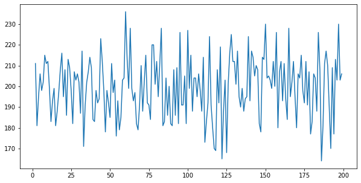
Column: sales_ar
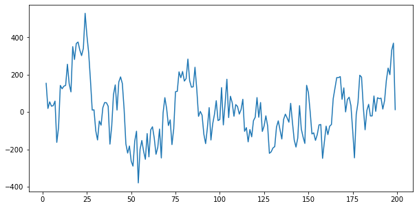
Column: sales_trend
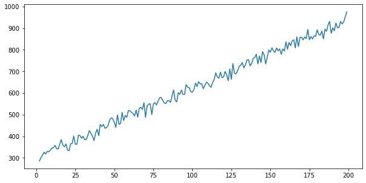
Column: bdays_in_month
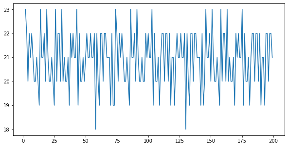
Column: quarter
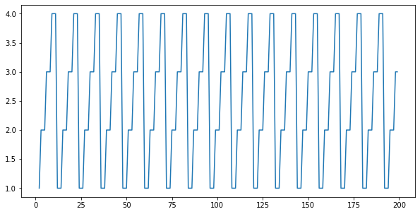
Column: sales_per_day
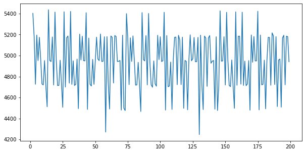
Column: mkt_base
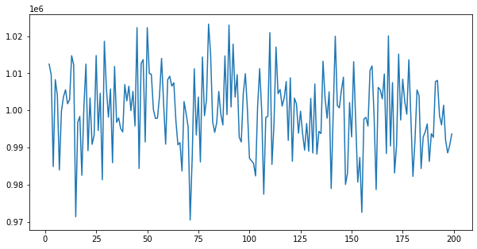
Column: mkt_trend
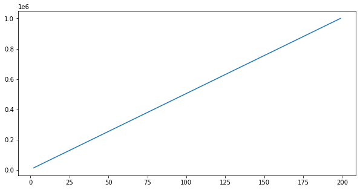
Column: mkt_season
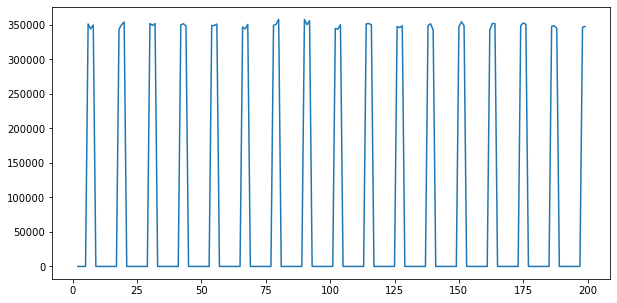
Column: mkt_total
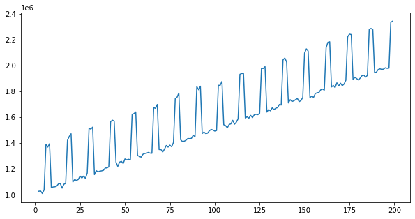
Column: sales_mkting
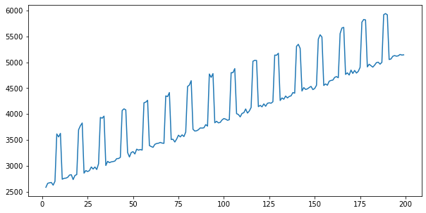
Dummy Dataset¶
data.head()
| y | date | marketing | x2 | x3 | |
|---|---|---|---|---|---|
| 2 | 8636 | 2004-03-31 | 1.027692e+06 | 0.716752 | 316.389974 |
| 3 | 8341 | 2004-04-30 | 1.029835e+06 | 0.466509 | 318.780107 |
| 4 | 7959 | 2004-05-31 | 1.010071e+06 | 0.361299 | 324.917503 |
| 5 | 8435 | 2004-06-30 | 1.038529e+06 | 0.852623 | 316.776026 |
| 6 | 8127 | 2004-07-31 | 1.390691e+06 | 0.571951 | 314.425310 |
for col in data.columns:
print(f'Column: {col}')
plt.figure(figsize=(10, 5))
plt.plot(data[col])
plt.show()
Column: y
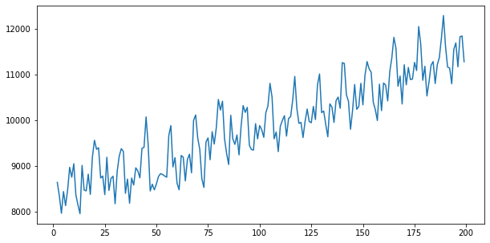
Column: date
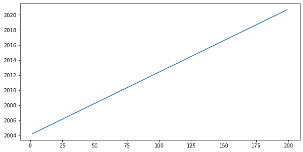
Column: marketing
Column: x2
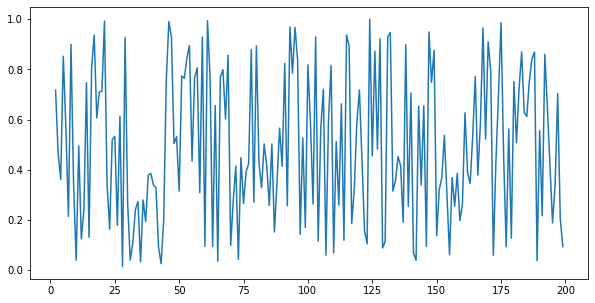
Column: x3
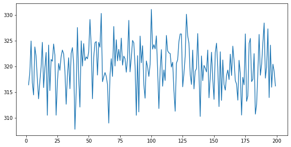
X = data.iloc[:, 1:]
y = data.iloc[:, 0]
x_train, x_test = X.iloc[:-40, :], X.iloc[-40:, :]
y_train, y_test = y.iloc[:-40], y.iloc[-40:]
Individual Transformers¶
tsfeast provides individual time series transformers that can be used by themselves or within Scikit-Learn Pipeline objects:
Transformer |
Parameters |
Description |
|---|---|---|
|
None |
Passes original features through pipeline. |
|
None |
Wraps Scikit-Learn |
|
date_col: |
Generates datetime features from a given date column. |
|
n_lags: |
Generate lag features. |
|
window_lengths: |
Generate rolling features (mean, std, min, max) for each specified window length. |
|
window_lengths: |
Generate exponentially-weighted moving average for each specified window length. |
|
period_lengths: |
Generate percent change for all features for each specified period length. |
|
n_diffs: |
Generate |
|
degree: |
Generate polynomial features. |
|
None |
Wraps Scikit-Learn |
Notes on Pipeline Use¶
Behavior of Scikit-Learn Pipeline objects is appropriate and intended for independent data observations, but not necessarily appropriate for the temporal dependencies inherent in time series.
Scikit-Learn pipelines only call the .transform() method during the .predict() method, which is appropriate to prevent data leakage in predictions. However, most of the transformers in this package take a set of features and generate new features; there’s no inherent method to transform some time series features given a fitted estimator.
For time series lags, changes, etc., we have access to past data for feature generation without risk of data leakage; certain features (e.g. lags) require this to avoid NaNs or zeros. This behavior is appropriate for time series transformations, only.
Generate DateTime Features¶
dt = DateTimeFeatures(date_col='date')
dt.fit_transform(X, y)
| year | quarter | month | days_in_month | bdays_in_month | leap_year | |
|---|---|---|---|---|---|---|
| 2 | 2004 | 1 | 3 | 31 | 23 | 1 |
| 3 | 2004 | 2 | 4 | 30 | 22 | 1 |
| 4 | 2004 | 2 | 5 | 31 | 20 | 1 |
| 5 | 2004 | 2 | 6 | 30 | 22 | 1 |
| 6 | 2004 | 3 | 7 | 31 | 21 | 1 |
| ... | ... | ... | ... | ... | ... | ... |
| 195 | 2020 | 2 | 4 | 30 | 22 | 1 |
| 196 | 2020 | 2 | 5 | 31 | 20 | 1 |
| 197 | 2020 | 2 | 6 | 30 | 22 | 1 |
| 198 | 2020 | 3 | 7 | 31 | 22 | 1 |
| 199 | 2020 | 3 | 8 | 31 | 21 | 1 |
198 rows × 6 columns
Generate Interaction Features¶
feat = LagFeatures(n_lags=4)
feat.fit_transform(X.iloc[:, 1:], y) # skipping date column
| marketing_lag_1 | x2_lag_1 | x3_lag_1 | marketing_lag_2 | x2_lag_2 | x3_lag_2 | marketing_lag_3 | x2_lag_3 | x3_lag_3 | marketing_lag_4 | x2_lag_4 | x3_lag_4 | |
|---|---|---|---|---|---|---|---|---|---|---|---|---|
| 2 | 0.000000e+00 | 0.000000 | 0.000000 | 0.000000e+00 | 0.000000 | 0.000000 | 0.000000e+00 | 0.000000 | 0.000000 | 0.000000e+00 | 0.000000 | 0.000000 |
| 3 | 1.027692e+06 | 0.716752 | 316.389974 | 0.000000e+00 | 0.000000 | 0.000000 | 0.000000e+00 | 0.000000 | 0.000000 | 0.000000e+00 | 0.000000 | 0.000000 |
| 4 | 1.029835e+06 | 0.466509 | 318.780107 | 1.027692e+06 | 0.716752 | 316.389974 | 0.000000e+00 | 0.000000 | 0.000000 | 0.000000e+00 | 0.000000 | 0.000000 |
| 5 | 1.010071e+06 | 0.361299 | 324.917503 | 1.029835e+06 | 0.466509 | 318.780107 | 1.027692e+06 | 0.716752 | 316.389974 | 0.000000e+00 | 0.000000 | 0.000000 |
| 6 | 1.038529e+06 | 0.852623 | 316.776026 | 1.010071e+06 | 0.361299 | 324.917503 | 1.029835e+06 | 0.466509 | 318.780107 | 1.027692e+06 | 0.716752 | 316.389974 |
| ... | ... | ... | ... | ... | ... | ... | ... | ... | ... | ... | ... | ... |
| 195 | 1.971301e+06 | 0.420222 | 313.911203 | 1.968782e+06 | 0.648398 | 327.288221 | 1.973312e+06 | 0.860346 | 319.932653 | 1.967943e+06 | 0.216269 | 317.692606 |
| 196 | 1.981624e+06 | 0.188104 | 324.110324 | 1.971301e+06 | 0.420222 | 313.911203 | 1.968782e+06 | 0.648398 | 327.288221 | 1.973312e+06 | 0.860346 | 319.932653 |
| 197 | 1.977056e+06 | 0.339024 | 315.926738 | 1.981624e+06 | 0.188104 | 324.110324 | 1.971301e+06 | 0.420222 | 313.911203 | 1.968782e+06 | 0.648398 | 327.288221 |
| 198 | 1.978757e+06 | 0.703778 | 320.409889 | 1.977056e+06 | 0.339024 | 315.926738 | 1.981624e+06 | 0.188104 | 324.110324 | 1.971301e+06 | 0.420222 | 313.911203 |
| 199 | 2.332540e+06 | 0.204360 | 319.029524 | 1.978757e+06 | 0.703778 | 320.409889 | 1.977056e+06 | 0.339024 | 315.926738 | 1.981624e+06 | 0.188104 | 324.110324 |
198 rows × 12 columns
TimeSeriesFeatures Class¶
tsfeast also includes a TimeSeriesFeatures class that generates multiple time series features in one transformer. The only required parameter is the column of datetimes; the optional parameters control what additional transformers are included.
Parameter |
Type |
Description |
|---|---|---|
datetime |
str |
Column that holds datetime information |
trend |
str |
Trend to include, options are {‘n’: no trend, ‘c’: constant only, ‘t’: linear trend, ‘ct’: constant and linear trend, ‘ctt’: constant, linear and quadratric trend}; defaults to no trend |
lags |
int |
Number of lags to include (optional). |
rolling |
List[int] |
Number of rolling windows to include (optional). |
ewma |
List[int] |
Number of ewma windows to include (optional). |
pct_chg |
List[int] |
Periods to use for percent change features (optional). |
diffs |
int |
Number of differences to include (optional). |
polynomial |
int |
Polynomial(s) to include (optional). |
interactions |
bool |
Whether to include interactions of original featutes; deault True. |
fillna |
bool |
Whether to fill NaN values with zero; default True. |
feat = TimeSeriesFeatures(
datetime='date',
trend='t',
lags=4,
interactions=False,
polynomial=3
)
features = feat.fit_transform(X, y)
features.head()
| trend | original__marketing | original__x2 | original__x3 | datetime__year | datetime__quarter | datetime__month | datetime__days_in_month | datetime__bdays_in_month | datetime__leap_year | ... | features__lags__x3_lag_3 | features__lags__marketing_lag_4 | features__lags__x2_lag_4 | features__lags__x3_lag_4 | features__polynomial__marketing^2 | features__polynomial__x2^2 | features__polynomial__x3^2 | features__polynomial__marketing^3 | features__polynomial__x2^3 | features__polynomial__x3^3 | |
|---|---|---|---|---|---|---|---|---|---|---|---|---|---|---|---|---|---|---|---|---|---|
| 0 | 1.0 | 1.027692e+06 | 0.716752 | 316.389974 | 2004.0 | 1.0 | 3.0 | 31.0 | 23.0 | 1.0 | ... | 0.000000 | 0.000000e+00 | 0.000000 | 0.000000 | 1.056152e+12 | 0.513733 | 100102.615631 | 1.085399e+18 | 0.368219 | 3.167146e+07 |
| 1 | 2.0 | 1.029835e+06 | 0.466509 | 318.780107 | 2004.0 | 2.0 | 4.0 | 30.0 | 22.0 | 1.0 | ... | 0.000000 | 0.000000e+00 | 0.000000 | 0.000000 | 1.060560e+12 | 0.217631 | 101620.756699 | 1.092202e+18 | 0.101527 | 3.239468e+07 |
| 2 | 3.0 | 1.010071e+06 | 0.361299 | 324.917503 | 2004.0 | 2.0 | 5.0 | 31.0 | 20.0 | 1.0 | ... | 0.000000 | 0.000000e+00 | 0.000000 | 0.000000 | 1.020244e+12 | 0.130537 | 105571.383672 | 1.030520e+18 | 0.047163 | 3.430199e+07 |
| 3 | 4.0 | 1.038529e+06 | 0.852623 | 316.776026 | 2004.0 | 2.0 | 6.0 | 30.0 | 22.0 | 1.0 | ... | 316.389974 | 0.000000e+00 | 0.000000 | 0.000000 | 1.078543e+12 | 0.726966 | 100347.050373 | 1.120098e+18 | 0.619827 | 3.178754e+07 |
| 4 | 5.0 | 1.390691e+06 | 0.571951 | 314.425310 | 2004.0 | 3.0 | 7.0 | 31.0 | 21.0 | 1.0 | ... | 318.780107 | 1.027692e+06 | 0.716752 | 316.389974 | 1.934020e+12 | 0.327128 | 98863.275608 | 2.689624e+18 | 0.187101 | 3.108512e+07 |
5 rows × 28 columns
[x for x in features.columns]
['trend',
'original__marketing',
'original__x2',
'original__x3',
'datetime__year',
'datetime__quarter',
'datetime__month',
'datetime__days_in_month',
'datetime__bdays_in_month',
'datetime__leap_year',
'features__lags__marketing_lag_1',
'features__lags__x2_lag_1',
'features__lags__x3_lag_1',
'features__lags__marketing_lag_2',
'features__lags__x2_lag_2',
'features__lags__x3_lag_2',
'features__lags__marketing_lag_3',
'features__lags__x2_lag_3',
'features__lags__x3_lag_3',
'features__lags__marketing_lag_4',
'features__lags__x2_lag_4',
'features__lags__x3_lag_4',
'features__polynomial__marketing^2',
'features__polynomial__x2^2',
'features__polynomial__x3^2',
'features__polynomial__marketing^3',
'features__polynomial__x2^3',
'features__polynomial__x3^3']
Pipeline Example¶
The TimeSeriesFeatures class can be used as a feature generation step within a Scikit-Learn Pipeline. Given the temporal nature of the data and models, this may not be appropriate for all use cases– though the class remains fully compatible with Pipeline objects.
We’ll instantiate a TimeSeriesFeatures object with a linear trend, four lags and no interactions. Our pipeline will include feature generation, feature scaling and feature selection steps, before modeling with ordinary least squares.
Note: the ForwardSelector class is available in the step-select package (https://pypi.org/project/step-select/).
The pipeline creates a total of 22 features, before selecting only four to use in the final model. Note that 3 of the 4 final features corresponed with features from our “true model” that created the dummy dataset (‘trend’, ‘datetime__bdays_in_month’ and ‘marketing_lag_2’).
Regression diagnostic plots show evidence of slightly non-normal residuals and (1) autoregressive term (again, as specified in the “true model”). We’ll address the autoregressive term in the next example.
feat = TimeSeriesFeatures(
datetime='date',
trend='t',
lags=4,
interactions=False
)
pl = Pipeline([
('feature_extraction', feat),
('scaler', StandardScaler()),
('feature_selection', ForwardSelector(metric='bic')),
('regression', LinearRegression())
])
pl.fit(x_train, y_train)
Pipeline(steps=[('feature_extraction',
TimeSeriesFeatures(datetime='date', interactions=False, lags=4,
trend='t')),
('scaler', StandardScaler()),
('feature_selection', ForwardSelector(metric='bic')),
('regression', LinearRegression())])
pl.named_steps.feature_extraction.output_features_
| trend | original__marketing | original__x2 | original__x3 | datetime__year | datetime__quarter | datetime__month | datetime__days_in_month | datetime__bdays_in_month | datetime__leap_year | ... | features__lags__x3_lag_1 | features__lags__marketing_lag_2 | features__lags__x2_lag_2 | features__lags__x3_lag_2 | features__lags__marketing_lag_3 | features__lags__x2_lag_3 | features__lags__x3_lag_3 | features__lags__marketing_lag_4 | features__lags__x2_lag_4 | features__lags__x3_lag_4 | |
|---|---|---|---|---|---|---|---|---|---|---|---|---|---|---|---|---|---|---|---|---|---|
| 0 | 1.0 | 1.027692e+06 | 0.716752 | 316.389974 | 2004.0 | 1.0 | 3.0 | 31.0 | 23.0 | 1.0 | ... | 0.000000 | 0.000000e+00 | 0.000000 | 0.000000 | 0.000000e+00 | 0.000000 | 0.000000 | 0.000000e+00 | 0.000000 | 0.000000 |
| 1 | 2.0 | 1.029835e+06 | 0.466509 | 318.780107 | 2004.0 | 2.0 | 4.0 | 30.0 | 22.0 | 1.0 | ... | 316.389974 | 0.000000e+00 | 0.000000 | 0.000000 | 0.000000e+00 | 0.000000 | 0.000000 | 0.000000e+00 | 0.000000 | 0.000000 |
| 2 | 3.0 | 1.010071e+06 | 0.361299 | 324.917503 | 2004.0 | 2.0 | 5.0 | 31.0 | 20.0 | 1.0 | ... | 318.780107 | 1.027692e+06 | 0.716752 | 316.389974 | 0.000000e+00 | 0.000000 | 0.000000 | 0.000000e+00 | 0.000000 | 0.000000 |
| 3 | 4.0 | 1.038529e+06 | 0.852623 | 316.776026 | 2004.0 | 2.0 | 6.0 | 30.0 | 22.0 | 1.0 | ... | 324.917503 | 1.029835e+06 | 0.466509 | 318.780107 | 1.027692e+06 | 0.716752 | 316.389974 | 0.000000e+00 | 0.000000 | 0.000000 |
| 4 | 5.0 | 1.390691e+06 | 0.571951 | 314.425310 | 2004.0 | 3.0 | 7.0 | 31.0 | 21.0 | 1.0 | ... | 316.776026 | 1.010071e+06 | 0.361299 | 324.917503 | 1.029835e+06 | 0.466509 | 318.780107 | 1.027692e+06 | 0.716752 | 316.389974 |
| ... | ... | ... | ... | ... | ... | ... | ... | ... | ... | ... | ... | ... | ... | ... | ... | ... | ... | ... | ... | ... | ... |
| 153 | 154.0 | 1.752743e+06 | 0.060631 | 322.823879 | 2016.0 | 4.0 | 12.0 | 31.0 | 21.0 | 1.0 | ... | 312.156618 | 1.750890e+06 | 0.537173 | 319.820019 | 2.110972e+06 | 0.368344 | 324.492379 | 2.127929e+06 | 0.320161 | 322.674221 |
| 154 | 155.0 | 1.782890e+06 | 0.368878 | 313.360448 | 2017.0 | 1.0 | 1.0 | 31.0 | 20.0 | 0.0 | ... | 322.823879 | 1.762560e+06 | 0.296868 | 312.156618 | 1.750890e+06 | 0.537173 | 319.820019 | 2.110972e+06 | 0.368344 | 324.492379 |
| 155 | 156.0 | 1.788336e+06 | 0.254549 | 321.235197 | 2017.0 | 1.0 | 2.0 | 28.0 | 19.0 | 0.0 | ... | 313.360448 | 1.752743e+06 | 0.060631 | 322.823879 | 1.762560e+06 | 0.296868 | 312.156618 | 1.750890e+06 | 0.537173 | 319.820019 |
| 156 | 157.0 | 1.790967e+06 | 0.385921 | 316.450145 | 2017.0 | 1.0 | 3.0 | 31.0 | 23.0 | 0.0 | ... | 321.235197 | 1.782890e+06 | 0.368878 | 313.360448 | 1.752743e+06 | 0.060631 | 322.823879 | 1.762560e+06 | 0.296868 | 312.156618 |
| 157 | 158.0 | 1.811012e+06 | 0.196960 | 315.360643 | 2017.0 | 2.0 | 4.0 | 30.0 | 20.0 | 0.0 | ... | 316.450145 | 1.788336e+06 | 0.254549 | 321.235197 | 1.782890e+06 | 0.368878 | 313.360448 | 1.752743e+06 | 0.060631 | 322.823879 |
158 rows × 22 columns
new_features = pl.named_steps.feature_extraction.feature_names_
mask = pl.named_steps.feature_selection.get_support()
new_features[mask]
Index(['trend', 'datetime__bdays_in_month', 'features__lags__marketing_lag_2',
'features__lags__x3_lag_2'],
dtype='object')
get_results(pl, x_train, x_test, y_train, y_test)
| training | testing | |
|---|---|---|
| MAE | 373.819325 | 201.999695 |
| MAPE | 0.040046 | 0.017827 |
resid = (y_train - pl.predict(x_train))
plot_diag(resid.iloc[2:]) # throw out first two residuals b/c of lags
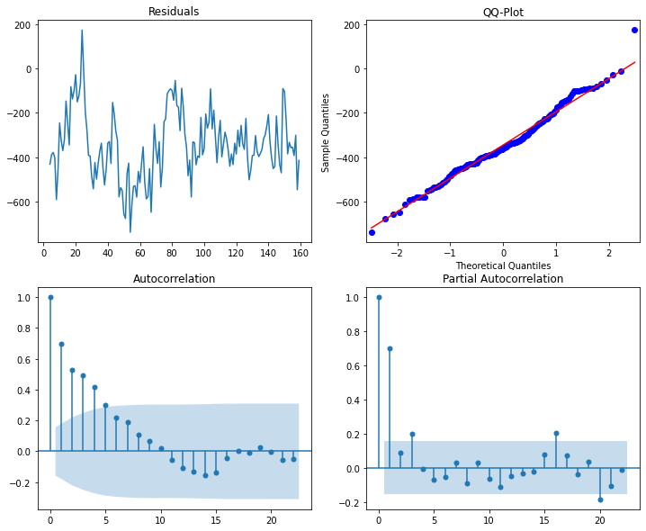
ARMA Regressor¶
tsfeast includes a models module that provides an ARMARegressor class for extending Scikit-Learn regressors by adding support for AR/MA or ARIMA residuals. It accepts an arbitrary Scikit-Learn regressor and a tuple indicating the (p,d,q) order for the residuals model.
Attribute |
Description |
|---|---|
|
The Scikit-Learn regressor. |
|
The (p,d,q,) order of the ARMA model. |
|
The fitted estimator’s intercept. |
|
The fitted estimator’s coefficients. |
|
The fitted ARMA model. |
|
The combined estimator and ARMA fitted values. |
|
The combined estimator and ARMA residual values. |
Note
The predict method should not be used to get fitted values from the training set; rather, users should access this same data using the fitted_values_ attribute. The predict method calls the ARMA regresor’s forecast method, which generates predictions from the last time step in the training data, thus would not match, temporally, in a predict call with training data.
The pipeline follows the same steps as the previous example, with the only change beging the regression model– in this case, the ARMARegressor. Metrics on test set slightly improve and we no longer see evidence of autoregressive term in the residuals.
feat = TimeSeriesFeatures(
datetime='date',
trend='t',
lags=4,
interactions=False
)
mod = ARMARegressor(
estimator=PoissonRegressor(),
order=(1,0,0)
)
pl = Pipeline([
('feature_extraction', feat),
('scaler', StandardScaler()),
('feature_selection', ForwardSelector(metric='bic')),
('regression', mod)
])
pl.fit(x_train, y_train)
Pipeline(steps=[('feature_extraction',
TimeSeriesFeatures(datetime='date', interactions=False, lags=4,
trend='t')),
('scaler', StandardScaler()),
('feature_selection', ForwardSelector(metric='bic')),
('regression', ARMARegressor(estimator=PoissonRegressor()))])
new_features = pl.named_steps.feature_extraction.feature_names_
mask = pl.named_steps.feature_selection.get_support()
new_features[mask]
Index(['trend', 'datetime__bdays_in_month', 'features__lags__marketing_lag_2',
'features__lags__x3_lag_2'],
dtype='object')
get_results(pl, x_train, x_test, y_train, y_test)
| training | testing | |
|---|---|---|
| MAE | 409.572082 | 143.269046 |
| MAPE | 0.043573 | 0.012745 |
plot_diag(pl.named_steps.regression.resid_)
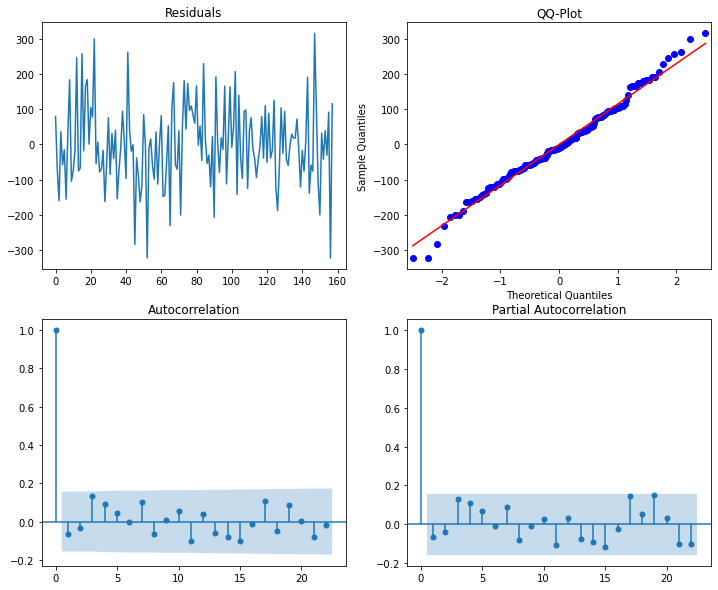